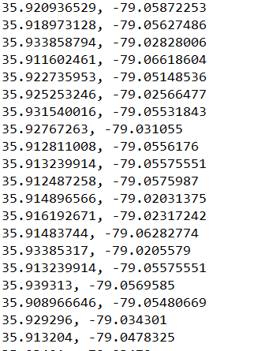
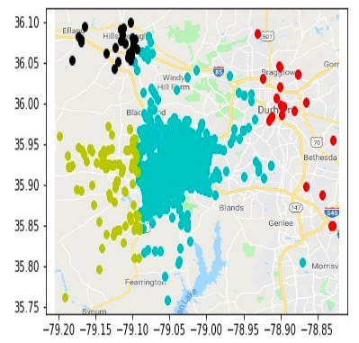
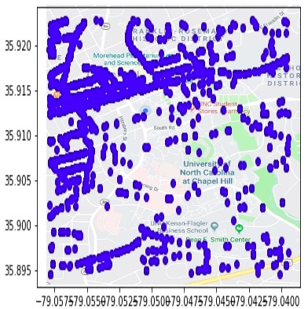

Mapping recent incident reports in Chapel Hill and using machine learning to generate hotspots
Because crime and incidents are not random events and thus shouldn't be distributed evenly across any given region, we can work backwards by recognizing patterns (or hotspots) based on their locations and frequencies and using them as an insight to a deeper knowledge of why these incidents occur in the first place.
Utilizing the City of Chapel Hill's incident reports from 2010-2019, we scraped the latitude and longtitude of each report into the following format: 
We chose to apply an unsupervised machine learning algorithm (K-means clustering) on the data. This seemed like the optimal choice, as unsupervised machine learning models are able to formulate trends on their own, without any reference to "correct" outputs. K-means clustering works by first initializing k means uniformly randomly, where k is a positive integer defined by the user. Each data point is then assigned to one of these means, usually by proximity. With each new data point added, the location of these means and grouping of the points may change. The algorithm stops when the locations of the means stop shifting, or when all the data points have been entered. In this project, the coordinates from the reformatted data set were plotted onto a 2D plane, and the K-means clustering model grouped the coordinates into k different clusters.
 Clusters on a map with Chapel Hill, Durham, and Hillsborough in view. As expected, CHPD reports were centralized in Chapel Hill. K-Means clustering led to a distinction between on-campus incident reports (pictured teal) and off-campus reports (pictured yellow).  Points as displayed on UNC-CH campus. Although visualization may be difficult due to the size of the points, the straight line on the top left of the picture is Franklin Street, where it appears the majority of the points are centralized around.